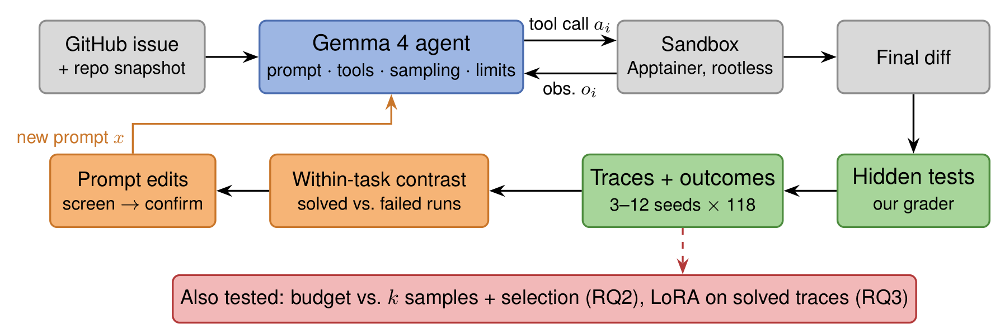
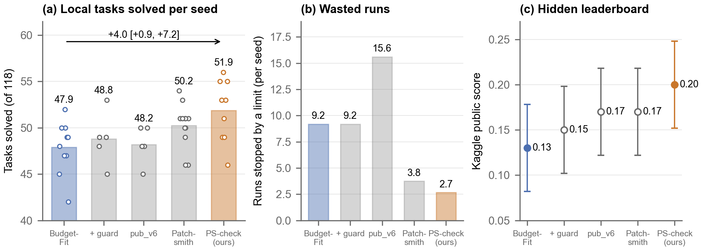
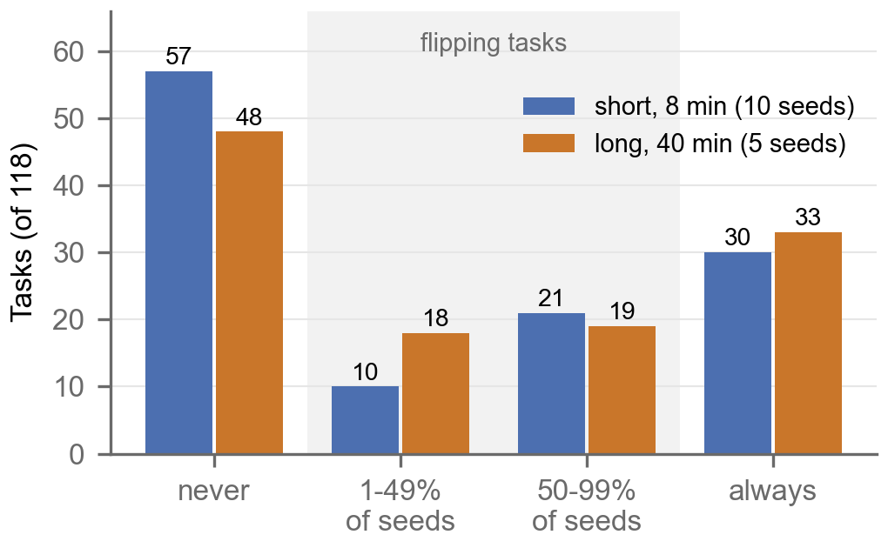
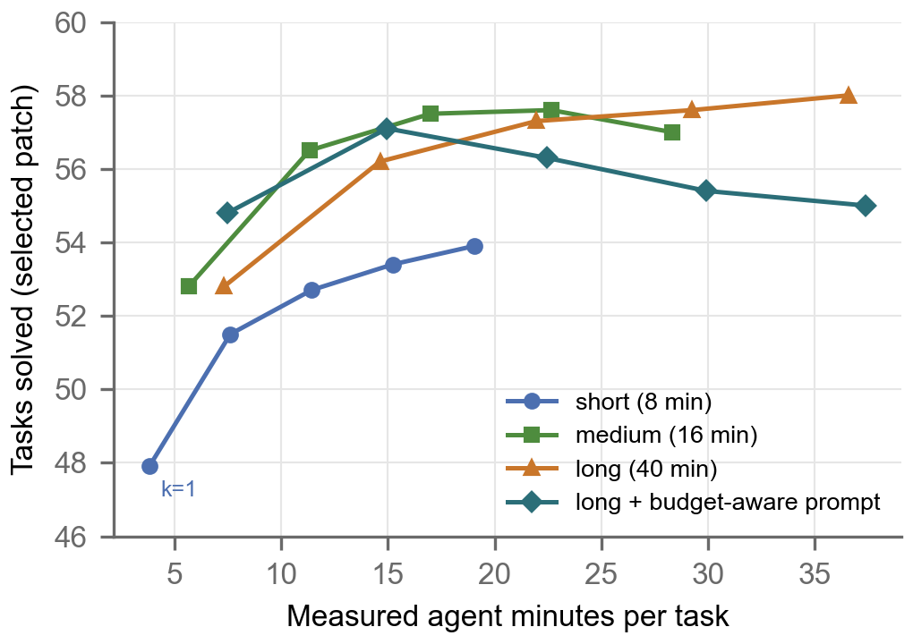
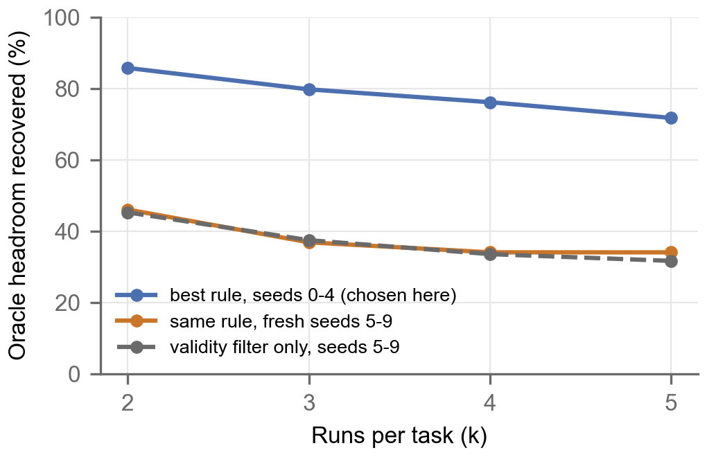
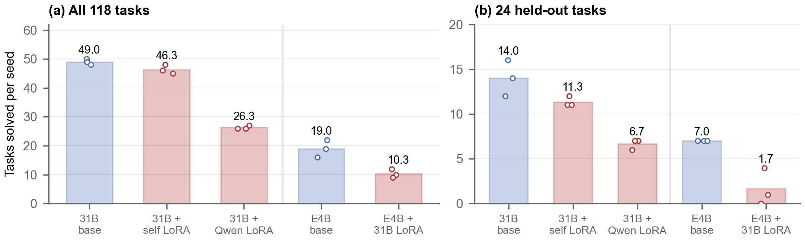
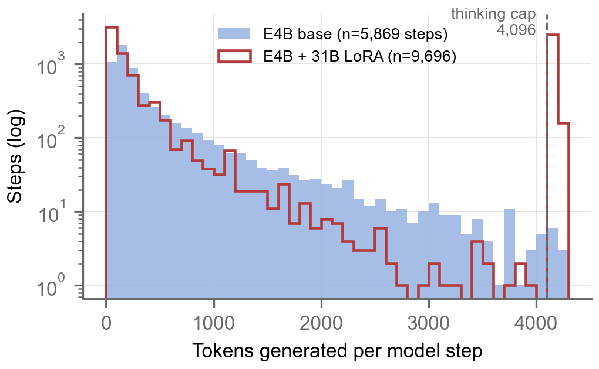
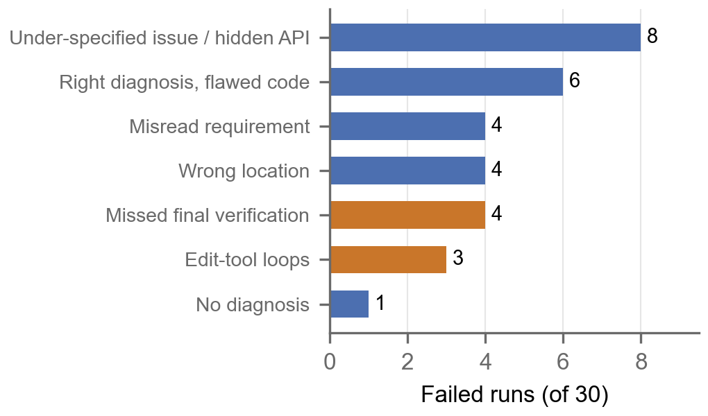
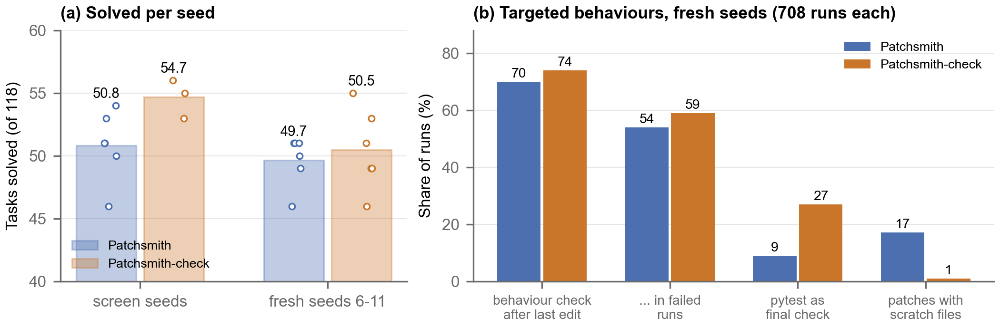

CS594/794 Deep Learning · Final project
Trace-guided improvement of a small open-weight coding agent under a fixed compute budget
Husnain Rasool
Nazarbayev University
Gemma 4 · Kaggle Developer Agent competition
Problem
The agent reads an issue, explores the repository with shell and file tools, edits code and submits a patch. Hidden unit tests decide whether the issue is solved.
Published SWE agents use frontier models, unlimited compute and tests to pick patches. Here there is none of that: only the agent's configuration can change.
Model
Gemma 4 31B and E4B, 4-bit QAT
Compute
4 × L4 GPUs, 12 h for about 120 hidden issues
We control
Prompt, tools, sampling, limits, LoRA adapter
Score
Share of issues resolved; public split ≈ 58 tasks
Headline result
47.9 → 51.9
local tasks solved per seed, of 118
+4.0 [+0.9, +7.2], paired bootstrap
9.2 → 2.7
runs per seed stopped by a time,
call or turn limit (−71%)
0.13 → 0.20
Kaggle public score on hidden
issues, same compute budget
Same limits, same model, same time per task (228 vs 222 s). The gain comes from agent design, not from more compute.
Research questions
RQ1 · Measurement
About ±5 tasks per run; use 3–12 seeds and paired tests.
RQ2 · Test-time compute
Longer runs. Selection without tests does not generalise.
RQ3 · Weights
No. All three recipes reduced accuracy.
RQ4 · Agent design
Yes: +1.6 tasks over Patchsmith, 0.17 → 0.20 on Kaggle.
Data and grader
129 → 118
public tasks kept: the gold patch passes and an empty patch fails. fastapi 60, rich 45, requests 12, httpx 1.
15,000+
agent runs on 2 × H100 with Kaggle's own vLLM wheel; L4 time measured at 1.17 × H100.
Three silent scoring faults we fixed
Method

Baseline
Budget-Fit, the public 31B config: 8 min, 28 tool calls, 80 turns, temperature 0.2.
Statistics
Paired bootstrap over the 118 tasks; 3–12 seeds per arm; noise model Var = Σ p(1 − p).
Protocol
3-seed screen with gates fixed in advance, then fresh seeds; adopt only if the pooled gain clears the bar.
Improvement path

RQ1 · Measurement

31 of 118
tasks flip between seeds of the same configuration.
4–5 tasks
smallest difference detectable even with 5 seeds per arm.
0.08–0.20
public scores of identical configs submitted by different teams.
RQ2 · Test-time compute

+4.9
tasks: one medium run vs one short run, 95% CI [+1.6, +8.5].
2.6 ×
the cost of five short runs plus a selector, still not better than one long run (−1.1).
20% → 4%
invalid runs (no patch or a limit hit) from short to long budget. Invalid runs never solve.
RQ2 · Selection without tests

72% → 34%
oracle headroom recovered at k = 5: in-sample vs pre-registered fresh seeds.
70 vs 58
tasks with a correct patch among five long runs vs tasks the best selector picks.
Gemma 4 judging its own patches added nothing. Without tests, selection is the bottleneck, not generation.
RQ3 · Fine-tuning

31B self-training · −2.7
Tied on its training tasks, −2.7 on held-out tasks [−5.7, −0.3].
31B ← Qwen teacher · −22.7
Learned to submit before editing: 1,410 of 1,550 submits empty.
E4B ← 31B · −8.7
Thinking loops to the 4,096-token cap; 88 of 118 runs timed out.
RQ3 · Diagnosis

2,527 vs 6
steps ending exactly at the thinking cap: adapter vs base.
1.02 → 0.38
training loss of the Qwen adapter while it learned a broken tool protocol.
A label audit (stop tokens, windows, chat template) found no bug. Likely causes: too few distinct tasks, style copying, repetition in a smaller student.
RQ4 · Trace analysis

88% vs 47%
solved vs failed runs with a behaviour check after the last edit (d = +0.89).
8%
of runs ended with pytest, though 94 of 134 pytest calls worked.
0.53 vs 0.50
'reproduce first' within task: a between-task correlation, not a cause.
RQ4 · Patchsmith-check

9% → 27%
runs ending with pytest as the final check
+1.6
tasks pooled over Patchsmith (12 vs 9 seeds), [−0.8, +4.2]
0.20
Kaggle public score, best of our five submissions
Discussion
| Change | Δ tasks |
|---|---|
| 5 short runs + selector vs 1 long run | −1.1 |
| 31B LoRA, self-training | −2.7 |
| 31B LoRA, Qwen teacher | −22.7 |
| E4B LoRA from 31B | −8.7 |
| 3 parallel solvers + selector | ±0, 4 × slower |
| Skill scripts (search, test finder) | −1.7 |
| Change | Δ tasks |
|---|---|
| Temperature 1.0 | +0.3 |
| Frequency penalty 0.2 | −3.0 |
| Thinking budget 2,048 | −1.0 |
| Thinking budget 8,192 (on PS-check) | −3.0 |
| Reviewer agent (on PS-check) | −4.0 |
| Spec-coverage step (on PS-check) | −1.0 |
What helped acts on one failure mode: wasted and unverified runs. More samples, more thinking and new weights did not.
Conclusion
Limitations
One model family; four repositories, 89% fastapi and rich; holdouts over seeds and solvable tasks; H100 instead of L4; +0.8 on fresh seeds alone is not significant.